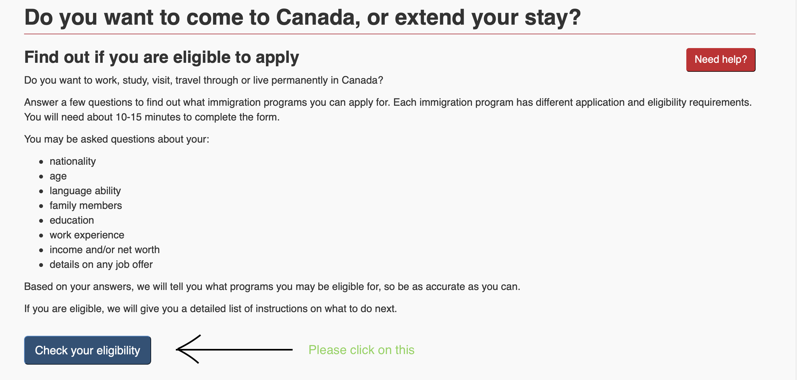
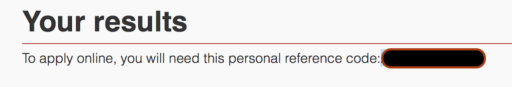
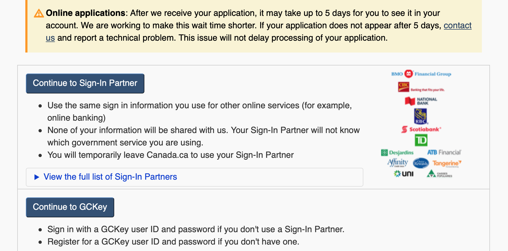
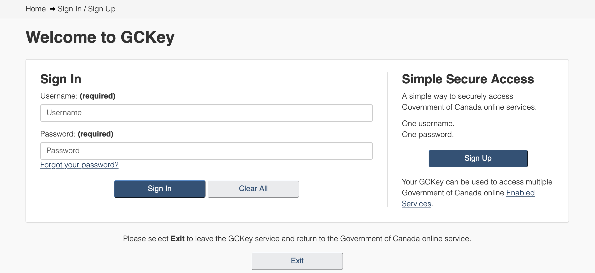
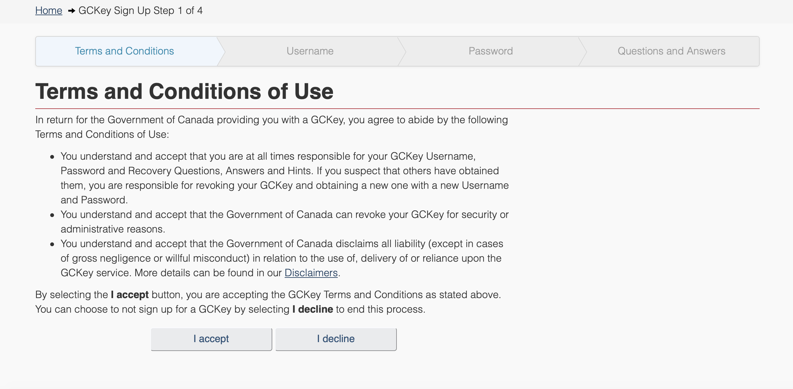

First and foremost welcome to your journey to obtain a Canadian PR
Following are the documents and steps you will need to obtain a Canadian PR
1. Firstly start by visiting this page
You will see a page like this.

I understand that you will need an IELTS score to actually complete this eligibility checker but we need to make sure you are eligible to work in Canada so that you do not waste your money on the IELTS exam.
Please click on check eligibilty and the follow the steps.
Please fill the form with care and honesty. Do not lie or exaggerate while filling the form.
You will put in the following scores when prompted(These are the minumum necessary scores in IELTS to be eleigible for the Permanent residency project)
Listening-8 Reading-7.5
Writing-7.5 Speaking-7.5
Based on your answers, if you get a message like then, Congratulations, you appear to be a good candidate for this process.
However, If you get a message saying
Based on your answers, you do not appear to be eligible for Express Entry
Don't be heartbroken as you can improve your profile and be an eligible candidate in the future.
2. IELTS test
Now this is a tricky part of the process as it depends on how quickly do you want to complete this process. Usually people want the PR process to be complete quickly and this part of the process requires you to study.
On an average, you should be able to give this exam after a month of studying. Sometimes, people give this within a week's time.
This is a very easy exam which has questions similar to a 4th grader's English exam.
Currently waiting time for an exam appointment ranges from 25 days to3 months.
You will be very lucky iif you find something in the period of less than a month.
You can find alternatives to IELTS here.
These options are
- CELPIP GENERAL
- CELPIP GENERAL-LS
- TEF
3. Education credential evaluation
This is an important step in your application and the timing of it is very important. You need to fill this evaluation request as soon as you book your IELTS exam. Canada Immigration wants more and more educated people to come to their country to give the economy a boost. For this they see that you have a good education, higher the better
The timing of this is crucial as it takes a minimum of 20 business days for evaluating your credentials. Adding to this, the shipping and holidays will make this process a 1.5 month process and you should be on top of it at the earliest
You will find a list of of the organizations providing Education Credential Assessments here
- Comparative Education Service: University of Toronto School of Continuing Studies
- International Credential Assessment Service of Canada
- World Education Services
- International Qualifications Assessment Service
- International Credential Evaluation Service
I have used WES for my application and believe that their total time is 20 working days after the receipt of the transcripts. You will need sealed and stamped transcripts from all the intitutions you have studied from. Remember it costs the same if you get an evaluation for one or more than one institution, so utilize this wisely and get all your degree transcripts evaluated.
4. Submitting an application
At this point it is safe to say that you have already given your IELTS and have your credentials evaluated.
Now, it is time to submit your application. You will start by visiting this page. This time, you are going to fill in your IELTS scores correctly and at the end of this you will get something like this
Please make sure you write down this reference number as it will useful for you later. Make sure you write it down atleast a caouple of times. Losing this number will mean you will have to fill the eligibilty questionnaire again.
Now that you have to create an account on the Canada Immigration Website

Here you have two options-if you have an account with any of the banks with the logos above, then use the first option. These are Canadian banks and usually you won't have an account but if you do, use your login credentials for the bank and login.
If not, the second option is for you. Please click on the second option CONTINUE TO GC KEY and create an account.
Now click on sign up if you don't already have an ID and password 
You can now see a page like this
Please follow the steps to create an account. Important thing to note here is that do not forget to note down your username and password as you are going to use this to login everytime. Also important is to note down the question and answers you provide as they will prompt you with one question every time you login from the set of question and answers you put in at this step. Once done, you will arrive at the CIC homepage. This is just the beginning to a lengthy yet very straightforward process.